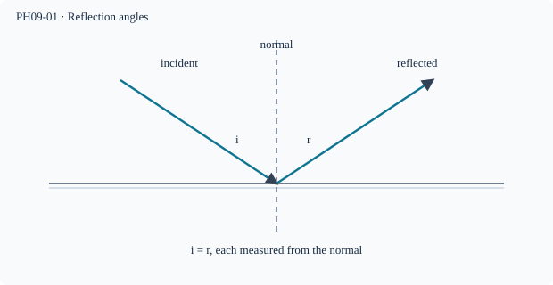

Prerequisite bridge
PH00-MEAS (unbound)
Before starting, identify the reference frame, directed rays, units and applicable geometric assumptions. Unbound prerequisites remain provisional.
Connected textbook foundation (preserved from PR #5)
1. A ray is a geometrical model
In an ordinary clear medium, light can often be modeled as traveling along approximately straight rays. A ray diagram communicates direction of propagation and where light can travel. It does not depict a ray as a physical solid string. The model is useful when the relevant dimensions are much larger than the wavelength of light and when scattering and diffraction are not central to the observation.
A mirror presents a reflective boundary. Draw the incident ray, the point of reflection, and the normal (a line perpendicular to the local surface). The angle of incidence and angle of reflection are measured from that normal. The ordinary law of reflection is i=r, with incident and reflected directions in the same plane as the surface normal.
Diagnostic: A student measures 35° from the mirror surface and calls it the angle of incidence. The angle from the normal is 55°. The arithmetic is easy; the decisive act is choosing the physical reference line.
2. Rotating the mirror changes the reflected ray
Suppose a narrow beam approaches a plane mirror with its direction fixed while the mirror is rotated through a small angle \theta in the plane of the rays. The surface normal rotates by the same \theta; the reflected ray direction rotates by approximately 2\theta when the geometry remains within the same specular-reflection regime. This doubled rotation is a consequence of equal angles about a moving normal, not a memorized law for any random three-dimensional motion.
Draw the normal before and after the rotation and reflect the same incident direction on both drawings. The geometry makes the doubled change visible. A student who merely writes 2\theta without specifying the incident ray and the rotation plane has not justified the result.
Build and check the model
A ray represents a direction of energy propagation, not a material filament. At a reflecting boundary the direction reverses only its normal component: in vector form d_out = d_in − 2(d_in·n)n for unit normal n. Reversing the choice of n gives the same reflected direction. In a fixed two-dimensional plane, a mirror rotation δ gives exactly 2δ change of reflected direction so long as the beam continues striking the reflecting face; the small-angle limitation is not needed for this planar geometry.
Worked anchor
A beam approaches a horizontal mirror at 25° to the surface. The incidence angle is 65° to the vertical normal; its reflected ray is 25° above the surface. If the surface turns 8° while the incident direction remains fixed, the reflected direction turns 16° in the same sense.
Condition and limiting check
For incidence 0°, the outgoing ray retraces the incoming path; incidence 90° is grazing, not an ordinary crossing of the mirror.
Misconception repair
A ray is not a physical strand; the normal is perpendicular to the local surface, not necessarily vertical.
Reasoning diagram

Self-check before transfer
A ray makes 32° with the mirror surface. Find its angle of incidence and the angle between incident and reflected ray segments on the reflecting side.
Check the reasoning
58° to the normal; the angle between the two ray segments drawn from the reflection point is 2×58°=116°.
The next page contains fresh authored transfer, not an examination reproduction.
Source and figure status
Curriculum pointer D8; candidate scope only. Preserved chapter manuscript. An original subtopic-specific SVG is attached above. Scientific figure and teaching-sufficiency reviews remain HOLD.